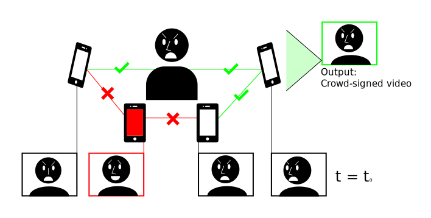
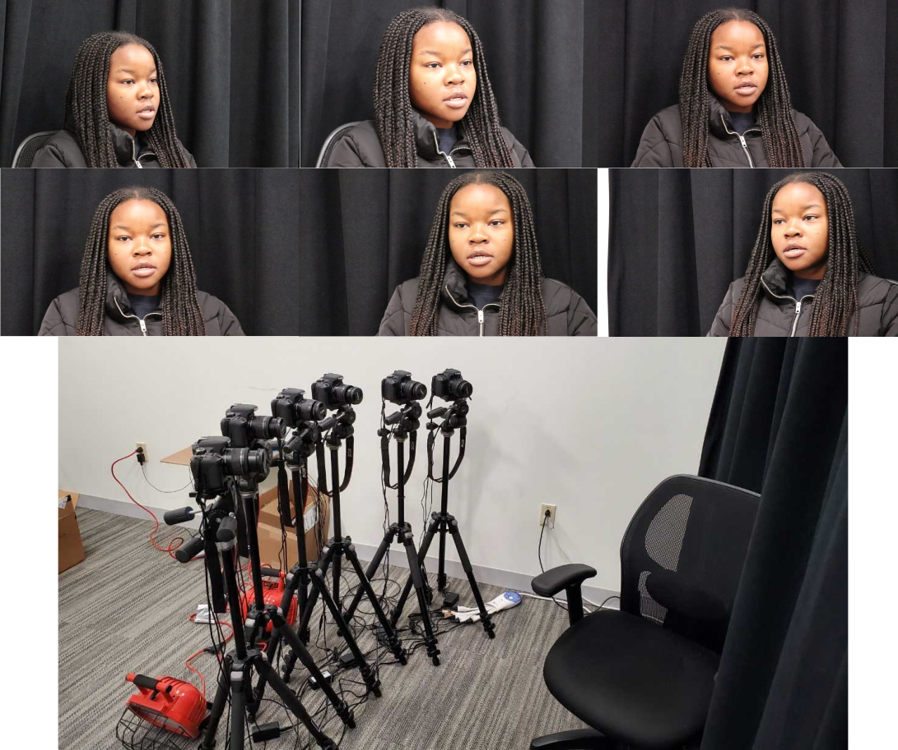

Using multiple simultaneous captures to help verify the truth of an event.
Abstract
Deepfakes can spread misinformation, defamation, and propaganda by faking videos of public speakers. We assume that future deepfakes will be visually indistinguishable from real video, and will also fool current deepfake detection methods. As such, we posit a social verification system that instead validates the truth of an event via a set of videos. To confirm which, if any, videos are being faked at any point in time, we check for consistent facial geometry across videos. We demonstrate that by comparing mouth movement across views using a combination of PCA and hierarchical clustering, we can detect a deepfake with subtle mouth manipulations out of a set of six videos at high accuracy. Using our new multi-view dataset of 25 speakers, we show that our performance gracefully decays as we increase the number of identically faked videos from different input views.
author = {Tursman, Eleanor and George, Marilyn and Kamara, Seny and Tompkin, James},
title = {Towards Untrusted Social Video Verification to Combat Deepfakes via Face Geometry Consistency},
booktitle = {The IEEE/CVF Conference on Computer Vision and Pattern Recognition (CVPR) Workshops},
month = {June},
year = {2020}
}
Code
We have two repositories:
Github repo for a Python implementation of the core method. This was setup for a hackathon: the facial landmarks have been pre-extracted from videos as this step used an expensive preprocess.
Github repo for a MATLAB implementation of the core method, plus all pre-processing code for the input videos and fake video generation.
Data
 Our data capture setup with example output multi-view frames.
We have captured 24 participants speaking arbitrary sentences from 6 time-synchronized DSLR cameras. Then, these input videos were turned into a set of deep fakes by shuffling the audio around and synthesizing new matching mouth motions via LipGAN, We also include facial landmarks processed from both the real and fake videos, which are input to our video matching function codes.
All data. This contains the real and fake videos from 24 participants.
PLEASE NOTE: These data are for preliminary experiments only and we release them for scientific reproducibility only. While we have captured some diversity in human appearance across our 24 participants, this data is heavily biased. Nobody should expect experimental findings generated with these data to hold across wider populations, and nobody should train a machine learning model on these data and deploy it anywhere.
Notes and Errata
One participant did not wish for their data to be released. Results reported in the main paper are for 25 participants, not 24, and so reproductions of our results will vary slightly.
Document issues: These have been fixed in our download PDF; the CVPRW proceedings PDF will still contain these issues.
The Eq. 1 definition of the Mahalanobis distance was missing a tranpose after the first parenthetical statement within the sum.
In Eq. 2, the eigenvector matrix \(E\) is determined through PCA, which operates on the covariance matrix of the data matrix. So, for greater clarify, in the paragraph following Eq. 2, we have added the words 'of the covariance matrix' before 'of that same data matrix'.
In Section 3.2, we have clarified that the clustering progresses via the minimum distance between leaves in any cluster, rather than any other linkage metric like an average over the cluster.